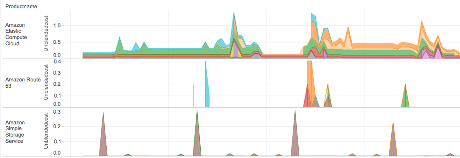
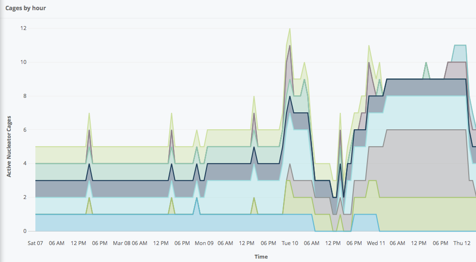
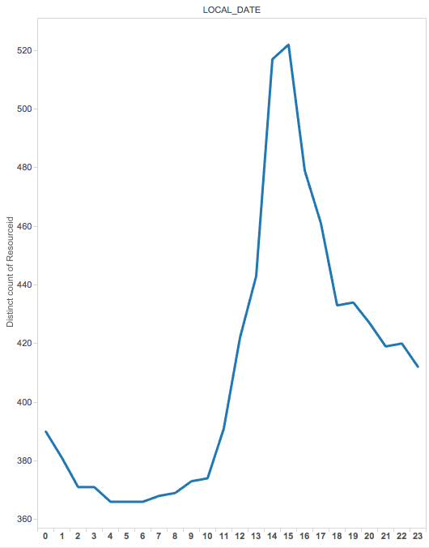

Prepare AWS Account - Set Up Billing and Reporting
As your deployed footprint at AWS increases it becomes more important to understand and manage this infrastructure. There are several powerful tools that help you to do this. Nucleator supports these key AWS key infrastructure management tools:
- Linked accounts: AWS allows for multiple accounts to be linked together for payment an reporting purposes. Assigning different parts of your business to use a unique AWS account provides great segregation for resources, costs and security decisions. A common pattern is to have different business areas assigned to unique AWS accounts and to have these linked accounts aggregated with consolidated billing.
- User tags: AWS allows for most resources to be given user defined tags that can hold business relevant information about the purpose, project, customer, or other information that will enable categorization of resource use and spend.
- Detailed billing reports: AWS will provide very detailed billing reports that include a wealth of data about your use of AWS resources and spend.
- Applying BI tools: Understanding the volume of data that results from a large AWS footprint can be quite challenging. While the AWS cost explorer can provide insight into your organization's use of AWS resources it is often not powerful enough to extract the level of information that is needed to fully understand your AWS footprint.
Many other tools exists in this space however, these four are generally underpinning most AWS infrastructure analysis processes and Nucleator works to support and enhance all these areas.
Linked Accounts and Consolidated Billing
The use of linked accounts is a business by business decision and is not required by Nucleator. Nucleator does support operation across multiple AWS accounts (linked or otherwise) through use of the account parameter. Nucleator can create Cages and Stacksets across a business' set of linked accounts. This enables Nucleator to be a powerful deployment tool across multiple lines of business within your enterprise.
It is important for tracking purposes that consolidated billing is enabled so that AWS infrastructure reporting can consolidated and analyzed. To sign up for consolidated billing
- Sign in to the AWS Management Console and open the Billing and Cost Management console at https://console.aws.amazon.com/billing/home#/.
- Click Consolidated Billing and follow the instructions on the page.
Once the account owners have agreed to link the information for the accounts will be combined. More information about consolidated billing can be found at http://docs.aws.amazon.com/awsaccountbilling/latest/aboutv2/consolidated-billing.html
User Tags
AWS allows for up to 10 user defined tags to be applied to most resources. These user tags can be defined (by use convention) to be common between all resources for your AWS account or unique by resource. The total number of user tags that can be defined can exceed 10 but only 10 can be applied to any one resource.
In order to maximize the utility of these user tags it is important to establish conventions within your organization. By having a set of user tags that are common among all AWS infrastructure powerful business analyses can be performed that span all of your AWS accounts. For example if infrastructure in support of a major client are all tagged the same then resource and cost analyses for this client can be easily viewed no matter if the resource is provisioned by marketing, R&D or sales. Also it is valuable to have some user tags be specific to the class or resource or department. Nucleator uses such tool-specific tags as described here: Nucleator Resource Tagging. However, there is no AWS policy engine that will enforce your conventions so organizational processes will be needed to ensure that user tags are properly used.
47Lining recommendations for global user tags:
- Offering – User Tag: Identifies the product, product line, development project, marketing campaign, or other other top level business purpose for the AWS infrastructure
- Purpose – User Tag: Identifies the (orthogonal to Offering) purposes for the infrastructure. These include types such as environment (production, demo, dev, test), business process step (orders, front-end, fulfillment), class of materials (public materials, campaign operations, crm), etc.
- Owner – Identifier of the business-relevant principal (typically a user or role) that created / owns the asset
- Name – A unique name of the asset
Applying these tags across all of your AWS resources in addition to using linked accounts to segregate the most macro of organizational divisions will allow for detailed analysis of your AWS resources and the charges that they drive. For this to happen all of your AWS resources will need to adopt your tagging convention, including resources that are started manually. When a common tagging methodology is applied to all your resources understanding the spent patterns and drivers will improve your AWS spend effectiveness. To this end it is helpful to note that Nucleator can cause the creation of an untagged resource - AWS elsastic beanstalk will create an S3 bucket in every region it is run. This bucket will be named elasticbeanstalk-{region}-{hash} and is a common resource for all elastic beanstalk operations within your account for that region. Since this is a shared resource, Nucleator does not have the necessary information to appropriately apply tags to it. Account owners should apply the 4 tags above to this bucket (done by modifying the bucket properties) manually.
Note: In order for user tags to flow to detailed AWS usage reports they will need to be marked for inclusion in these reports - see detailed billing reports section below.
Detailed Billing Reports
Don't be fooled by the name – detailed billing reports provide a wealth of AWS usage information that is useful well outside of cost management. These reports will include hour by hour usage information for all resources at AWS as well as the costs associated with this usage. This information can provide a great deal of insight into your AWS resource usage, profile vs time, opportunities for cost-saving purchases such as reserved instances, spend by organization, tag or person etc.
To enable detailed billing reports you will need to do the following for your master account:
The AWS "sample policy" for a billing report bucket at the time of this writing is:
{
"Version": "2008-10-17",
"Id": "Policy1335892530063",
"Statement": [
{
"Sid": "Stmt1335892150622",
"Effect": "Allow",
"Principal": {
"AWS": "arn:aws:iam::386209384616:root"
},
"Action": [
"s3:GetBucketAcl",
"s3:GetBucketPolicy"
],
"Resource": "arn:aws:s3:::billing-47lining-com"
},
{
"Sid": "Stmt1335892526596",
"Effect": "Allow",
"Principal": {
"AWS": "arn:aws:iam::386209384616:root"
},
"Action": [
"s3:PutObject"
],
"Resource": "arn:aws:s3:::billing-47lining-com/*"
}
]
}
Applying BI Tools
Once you have enabled detailed billing reports your billing report bucket in your master account will receive a large volume of information updated multiple times per day. The information is organized by month and single files will include information about resource use and cost for all linked accounts. Gaining insight into your AWS footprint will not be achieved by simply viewing these files as the amount of data is too large. At 47Lining we store our billing information in AWS' data warehouse offering Redshift and update the database twice daily. By attaching BI tools to the Redshift database a wealth of information can be learned.
47Lining Nucleator has a set of tools currently in the alpha stage of development that enable the importing of detailed billing information, transformation of this information, and standard analysis views into this data. While this offering is not yet publicly available, 47Lining is looking for alpha users to provide feedback. If interested please contact 47Lining by email at info@47lining.com and indicate "Billing Toolset alpha program" in the subject. The information below is based on our own internal use of this toolset.
There are a variety of BI tools that can be used to perform the analysis and presentation of your AWS usage information each with its own strengths and weaknesses. This is a summary of the tools we have successfully used within 47lining for evaluating our data:
- Tableau
- Pro: Very powerful and intuitive to use
- Con: Price
- Looker
- Pro: Active dashboard views that can be embedded in web pages
- Con: Difficult to use in a data exploration mode and requires knowledge of Lookml programming language
- R
- Pro: Free and open source
- Con: Software skills needed
With a BI toolset attached to Redshift there are several classes of report or metric that can be produced. The dashboards we most often look at by class of report are:
- Spend patterns over time for
- Linked account
- Offering and Purpose
- AWS Product
- Owner
- Resource usage
- ec2 hours per day per instance type
- s3 usage by account, owner, and purpose
- Data transfer charges by account, offering and purpose
- Nucleator activity over time and by account
- Cages
- Stacksets
- Usage patterns by time of day
- DB usage
- Data transfer charges
- Elastic resources
- Non-compliant tagging
- Validation of use conventional tags
- Validation of tags using agreed to values
This is just a partial lis of the information that can be seen in the AWS detailed billing reports and if additional sources of data, such as web server log archives and platform event log databases, are added there is no limit to business valuable information that can be learned.
Example Metrics:
Per-Product Cost by Hour and Linked Account (Tableau):

Nucleator Cages by Hour and Linked Account (Looker):

Running ec2 Instances by Hour of the Day (tableau):

Next: Hardening your Nucleator Installation and Launching Nucleator's User Interface